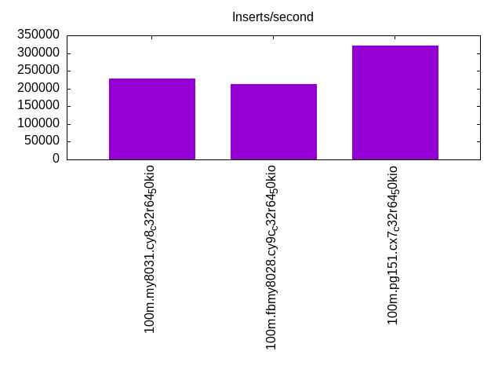

Introduction
This is a report for the insert benchmark with 100M docs and 8 client(s). It is generated by scripts (bash, awk, sed) and Tufte might not be impressed. An overview of the insert benchmark is here and a short update is here. Below, by DBMS, I mean DBMS+version.config. An example is my8020.c10b40 where my means MySQL, 8020 is version 8.0.20 and c10b40 is the name for the configuration file.
The test server is an c7g.8xl with 32 cores, 64G RAM and io2 storage (2T, 50K IOPs). The benchmark was run with 8 clients and there was 1 or 2 connections per client (1 for queries, 1 for inserts). The benchmark loads 75M rows without secondary indexes, creates secondary indexes, loads another 25M rows then does 3 read+write tests for one hour each that do queries as fast as possible with 100, 500 and then 1000 writes/second/client concurrent with the queries. The database is cached by the storage engine and the only IO is for writes. Clients and the DBMS share one server. The per-database configs are in the per-database subdirectories here.
The tested DBMS are:
- my8031.cy8_c32r64_50kio - MySQL 8.0.31 with InnoDB and the cy8_c32r64_50kio config
- fbmy8028.cy9c_c32r64_50kio - FB MySQL 8.0.28 with MyRocks and the cy9c_c32r64_50kio config
- pg151.cx7_c32r64_50kio - Postgres 15.1 and the cx7_c32r64_50kio config
Contents
- Summary
- l.i0: load without secondary indexes
- l.x: create secondary indexes
- l.i1: continue load after secondary indexes created
- q100.1: range queries with 100 insert/s per client
- q500.1: range queries with 500 insert/s per client
- q1000.1: range queries with 1000 insert/s per client
Summary
The numbers are inserts/s for l.i0 and l.i1, indexed docs (or rows) /s for l.x and queries/s for q*.2. The values are the average rate over the entire test for inserts (IPS) and queries (QPS). The range of values for IPS and QPS is split into 3 parts: bottom 25%, middle 50%, top 25%. Values in the bottom 25% have a red background, values in the top 25% have a green background and values in the middle have no color. A gray background is used for values that can be ignored because the DBMS did not sustain the target insert rate. Red backgrounds are not used when the minimum value is within 80% of the max value.
| dbms | l.i0 | l.x | l.i1 | q100.1 | q500.1 | q1000.1 |
|---|---|---|---|---|---|---|
| 100m.my8031.cy8_c32r64_50kio | 700934 | 798936 | 227273 | 54686 | 54251 | 54107 |
| 100m.fbmy8028.cy9c_c32r64_50kio | 500000 | 695370 | 211864 | 42392 | 42153 | 41685 |
| 100m.pg151.cx7_c32r64_50kio | 882353 | 2422581 | 320513 | 143022 | 141187 | 140864 |
This lists the average rate of inserts/s for the tests that do inserts concurrent with queries. For such tests the query rate is listed in the table above. The read+write tests are setup so that the insert rate should match the target rate every second. Cells that are not at least 95% of the target have a red background to indicate a failure to satisfy the target.
| dbms | q100.1 | q500.1 | q1000.1 |
|---|---|---|---|
| my8031.cy8_c32r64_50kio | 798 | 3989 | 7976 |
| fbmy8028.cy9c_c32r64_50kio | 798 | 3988 | 7978 |
| pg151.cx7_c32r64_50kio | 798 | 3988 | 7976 |
| target | 800 | 4000 | 8000 |
l.i0
l.i0: load without secondary indexes. Graphs for performance per 1-second interval are here.
Average throughput:
Insert response time histogram: each cell has the percentage of responses that take <= the time in the header and max is the max response time in seconds. For the max column values in the top 25% of the range have a red background and in the bottom 25% of the range have a green background. The red background is not used when the min value is within 80% of the max value.
| dbms | 256us | 1ms | 4ms | 16ms | 64ms | 256ms | 1s | 4s | 16s | gt | max |
|---|---|---|---|---|---|---|---|---|---|---|---|
| my8031.cy8_c32r64_50kio | 98.480 | 1.326 | 0.166 | 0.025 | 0.003 | 0.069 | |||||
| fbmy8028.cy9c_c32r64_50kio | 15.813 | 84.156 | 0.004 | 0.027 | 0.055 | ||||||
| pg151.cx7_c32r64_50kio | 99.970 | 0.030 | 0.003 |
Performance metrics for the DBMS listed above. Some are normalized by throughput, others are not. Legend for results is here.
ips qps rps rmbps wps wmbps rpq rkbpq wpi wkbpi csps cpups cspq cpupq dbgb1 dbgb2 rss maxop p50 p99 tag 700934 0 0 0.0 1091.6 183.2 0.000 0.000 0.002 0.268 103558 32.5 0.148 15 5.0 101.6 9.4 0.069 104589 71523 100m.my8031.cy8_c32r64_50kio 500000 0 0 0.0 801.9 182.7 0.000 0.000 0.002 0.374 64213 30.5 0.128 20 2.5 3.2 1.4 0.055 69325 32066 100m.fbmy8028.cy9c_c32r64_50kio 882353 0 0 0.0 1643.8 377.9 0.000 0.000 0.002 0.439 108525 32.9 0.123 12 7.2 19.4 0.0 0.003 137653 67628 100m.pg151.cx7_c32r64_50kio
l.x
l.x: create secondary indexes.
Average throughput:
Performance metrics for the DBMS listed above. Some are normalized by throughput, others are not. Legend for results is here.
ips qps rps rmbps wps wmbps rpq rkbpq wpi wkbpi csps cpups cspq cpupq dbgb1 dbgb2 rss maxop p50 p99 tag 798936 0 4438 291.6 15781.5 783.9 0.006 0.374 0.020 1.005 76958 18.2 0.096 7 11.1 107.7 14.0 0.002 NA NA 100m.my8031.cy8_c32r64_50kio 695370 0 2 0.1 580.3 132.0 0.000 0.000 0.001 0.194 4511 22.7 0.006 10 5.0 5.7 8.0 0.002 NA NA 100m.fbmy8028.cy9c_c32r64_50kio 2422581 0 0 0.0 2507.7 612.0 0.000 0.000 0.001 0.259 30657 18.0 0.013 2 13.8 32.1 5.9 0.003 NA NA 100m.pg151.cx7_c32r64_50kio
l.i1
l.i1: continue load after secondary indexes created. Graphs for performance per 1-second interval are here.
Average throughput:
Insert response time histogram: each cell has the percentage of responses that take <= the time in the header and max is the max response time in seconds. For the max column values in the top 25% of the range have a red background and in the bottom 25% of the range have a green background. The red background is not used when the min value is within 80% of the max value.
| dbms | 256us | 1ms | 4ms | 16ms | 64ms | 256ms | 1s | 4s | 16s | gt | max |
|---|---|---|---|---|---|---|---|---|---|---|---|
| my8031.cy8_c32r64_50kio | 99.075 | 0.497 | 0.303 | 0.124 | 0.126 | ||||||
| fbmy8028.cy9c_c32r64_50kio | 1.214 | 98.750 | 0.022 | 0.014 | 0.063 | ||||||
| pg151.cx7_c32r64_50kio | 9.535 | 90.458 | 0.006 | 0.012 |
Performance metrics for the DBMS listed above. Some are normalized by throughput, others are not. Legend for results is here.
ips qps rps rmbps wps wmbps rpq rkbpq wpi wkbpi csps cpups cspq cpupq dbgb1 dbgb2 rss maxop p50 p99 tag 227273 0 3124 48.8 1863.4 209.8 0.014 0.220 0.008 0.945 96473 26.2 0.424 37 18.9 115.4 21.6 0.126 35412 400 100m.my8031.cy8_c32r64_50kio 211864 0 191 23.7 1106.8 251.1 0.001 0.115 0.005 1.214 69908 29.0 0.330 44 10.2 12.1 9.0 0.063 27671 699 100m.fbmy8028.cy9c_c32r64_50kio 320513 0 0 0.0 1952.8 445.2 0.000 0.000 0.006 1.422 84278 28.6 0.263 29 22.8 53.2 0.0 0.012 46900 23375 100m.pg151.cx7_c32r64_50kio
q100.1
q100.1: range queries with 100 insert/s per client. Graphs for performance per 1-second interval are here.
Average throughput:
Query response time histogram: each cell has the percentage of responses that take <= the time in the header and max is the max response time in seconds. For max values in the top 25% of the range have a red background and in the bottom 25% of the range have a green background. The red background is not used when the min value is within 80% of the max value.
| dbms | 256us | 1ms | 4ms | 16ms | 64ms | 256ms | 1s | 4s | 16s | gt | max |
|---|---|---|---|---|---|---|---|---|---|---|---|
| my8031.cy8_c32r64_50kio | 99.999 | 0.001 | nonzero | nonzero | 0.024 | ||||||
| fbmy8028.cy9c_c32r64_50kio | 99.988 | 0.012 | nonzero | nonzero | nonzero | 0.024 | |||||
| pg151.cx7_c32r64_50kio | 99.999 | 0.001 | nonzero | nonzero | 0.009 |
Insert response time histogram: each cell has the percentage of responses that take <= the time in the header and max is the max response time in seconds. For max values in the top 25% of the range have a red background and in the bottom 25% of the range have a green background. The red background is not used when the min value is within 80% of the max value.
| dbms | 256us | 1ms | 4ms | 16ms | 64ms | 256ms | 1s | 4s | 16s | gt | max |
|---|---|---|---|---|---|---|---|---|---|---|---|
| my8031.cy8_c32r64_50kio | 99.903 | 0.097 | 0.011 | ||||||||
| fbmy8028.cy9c_c32r64_50kio | 11.490 | 88.503 | 0.007 | 0.008 | |||||||
| pg151.cx7_c32r64_50kio | 99.658 | 0.328 | 0.014 | 0.019 |
Performance metrics for the DBMS listed above. Some are normalized by throughput, others are not. Legend for results is here.
ips qps rps rmbps wps wmbps rpq rkbpq wpi wkbpi csps cpups cspq cpupq dbgb1 dbgb2 rss maxop p50 p99 tag 798 54686 0 0.0 276.0 7.7 0.000 0.000 0.346 9.934 210722 25.0 3.853 146 19.1 115.6 21.8 0.024 7033 6617 100m.my8031.cy8_c32r64_50kio 798 42392 1 0.0 15.1 2.9 0.000 0.000 0.019 3.707 162471 25.4 3.833 192 7.2 7.5 19.5 0.024 5242 4795 100m.fbmy8028.cy9c_c32r64_50kio 798 143022 0 0.0 1098.1 28.4 0.000 0.000 1.377 36.424 546584 25.0 3.822 56 23.1 49.1 0.0 0.009 18972 18412 100m.pg151.cx7_c32r64_50kio
q500.1
q500.1: range queries with 500 insert/s per client. Graphs for performance per 1-second interval are here.
Average throughput:

Query response time histogram: each cell has the percentage of responses that take <= the time in the header and max is the max response time in seconds. For max values in the top 25% of the range have a red background and in the bottom 25% of the range have a green background. The red background is not used when the min value is within 80% of the max value.
| dbms | 256us | 1ms | 4ms | 16ms | 64ms | 256ms | 1s | 4s | 16s | gt | max |
|---|---|---|---|---|---|---|---|---|---|---|---|
| my8031.cy8_c32r64_50kio | 99.994 | 0.006 | nonzero | nonzero | 0.005 | ||||||
| fbmy8028.cy9c_c32r64_50kio | 99.981 | 0.019 | nonzero | nonzero | 0.013 | ||||||
| pg151.cx7_c32r64_50kio | 99.998 | 0.002 | nonzero | nonzero | 0.010 |
Insert response time histogram: each cell has the percentage of responses that take <= the time in the header and max is the max response time in seconds. For max values in the top 25% of the range have a red background and in the bottom 25% of the range have a green background. The red background is not used when the min value is within 80% of the max value.
| dbms | 256us | 1ms | 4ms | 16ms | 64ms | 256ms | 1s | 4s | 16s | gt | max |
|---|---|---|---|---|---|---|---|---|---|---|---|
| my8031.cy8_c32r64_50kio | 99.900 | 0.100 | 0.009 | ||||||||
| fbmy8028.cy9c_c32r64_50kio | 4.937 | 95.044 | 0.019 | 0.014 | |||||||
| pg151.cx7_c32r64_50kio | nonzero | 95.204 | 4.793 | 0.003 | 0.019 |
Performance metrics for the DBMS listed above. Some are normalized by throughput, others are not. Legend for results is here.
ips qps rps rmbps wps wmbps rpq rkbpq wpi wkbpi csps cpups cspq cpupq dbgb1 dbgb2 rss maxop p50 p99 tag 3989 54251 0 0.0 39.8 2.3 0.000 0.000 0.010 0.597 209356 25.4 3.859 150 20.0 116.6 22.8 0.005 6793 6393 100m.my8031.cy8_c32r64_50kio 3988 42153 0 0.0 34.2 7.4 0.000 0.000 0.009 1.892 162646 26.1 3.858 198 8.2 10.3 34.8 0.013 5354 4923 100m.fbmy8028.cy9c_c32r64_50kio 3988 141187 0 0.0 1334.4 58.6 0.000 0.000 0.335 15.046 540896 25.2 3.831 57 24.5 43.2 0.0 0.010 17293 16079 100m.pg151.cx7_c32r64_50kio
q1000.1
q1000.1: range queries with 1000 insert/s per client. Graphs for performance per 1-second interval are here.
Average throughput:
Query response time histogram: each cell has the percentage of responses that take <= the time in the header and max is the max response time in seconds. For max values in the top 25% of the range have a red background and in the bottom 25% of the range have a green background. The red background is not used when the min value is within 80% of the max value.
| dbms | 256us | 1ms | 4ms | 16ms | 64ms | 256ms | 1s | 4s | 16s | gt | max |
|---|---|---|---|---|---|---|---|---|---|---|---|
| my8031.cy8_c32r64_50kio | 99.985 | 0.014 | 0.001 | nonzero | 0.005 | ||||||
| fbmy8028.cy9c_c32r64_50kio | 99.958 | 0.041 | 0.001 | nonzero | nonzero | 0.035 | |||||
| pg151.cx7_c32r64_50kio | 99.995 | 0.004 | 0.001 | nonzero | 0.011 |
Insert response time histogram: each cell has the percentage of responses that take <= the time in the header and max is the max response time in seconds. For max values in the top 25% of the range have a red background and in the bottom 25% of the range have a green background. The red background is not used when the min value is within 80% of the max value.
| dbms | 256us | 1ms | 4ms | 16ms | 64ms | 256ms | 1s | 4s | 16s | gt | max |
|---|---|---|---|---|---|---|---|---|---|---|---|
| my8031.cy8_c32r64_50kio | 99.719 | 0.281 | 0.013 | ||||||||
| fbmy8028.cy9c_c32r64_50kio | 1.209 | 98.774 | 0.017 | 0.014 | |||||||
| pg151.cx7_c32r64_50kio | 0.002 | 94.165 | 5.832 | 0.001 | 0.019 |
Performance metrics for the DBMS listed above. Some are normalized by throughput, others are not. Legend for results is here.
ips qps rps rmbps wps wmbps rpq rkbpq wpi wkbpi csps cpups cspq cpupq dbgb1 dbgb2 rss maxop p50 p99 tag 7976 54107 0 0.0 294.7 12.4 0.000 0.000 0.037 1.595 211427 26.1 3.908 154 26.0 122.6 28.2 0.005 6761 6393 100m.my8031.cy8_c32r64_50kio 7978 41685 12 1.4 68.4 15.1 0.000 0.035 0.009 1.937 162463 26.5 3.897 203 10.4 12.2 44.9 0.035 5194 4763 100m.fbmy8028.cy9c_c32r64_50kio 7976 140864 0 0.0 1105.6 80.2 0.000 0.000 0.139 10.291 540992 25.4 3.841 58 27.8 53.4 0.0 0.011 17869 17038 100m.pg151.cx7_c32r64_50kio
l.i0
l.i0: load without secondary indexes
Performance metrics for all DBMS, not just the ones listed above. Some are normalized by throughput, others are not. Legend for results is here.
ips qps rps rmbps wps wmbps rpq rkbpq wpi wkbpi csps cpups cspq cpupq dbgb1 dbgb2 rss maxop p50 p99 tag 700934 0 0 0.0 1091.6 183.2 0.000 0.000 0.002 0.268 103558 32.5 0.148 15 5.0 101.6 9.4 0.069 104589 71523 100m.my8031.cy8_c32r64_50kio 500000 0 0 0.0 801.9 182.7 0.000 0.000 0.002 0.374 64213 30.5 0.128 20 2.5 3.2 1.4 0.055 69325 32066 100m.fbmy8028.cy9c_c32r64_50kio 882353 0 0 0.0 1643.8 377.9 0.000 0.000 0.002 0.439 108525 32.9 0.123 12 7.2 19.4 0.0 0.003 137653 67628 100m.pg151.cx7_c32r64_50kio
l.x
l.x: create secondary indexes
Performance metrics for all DBMS, not just the ones listed above. Some are normalized by throughput, others are not. Legend for results is here.
ips qps rps rmbps wps wmbps rpq rkbpq wpi wkbpi csps cpups cspq cpupq dbgb1 dbgb2 rss maxop p50 p99 tag 798936 0 4438 291.6 15781.5 783.9 0.006 0.374 0.020 1.005 76958 18.2 0.096 7 11.1 107.7 14.0 0.002 NA NA 100m.my8031.cy8_c32r64_50kio 695370 0 2 0.1 580.3 132.0 0.000 0.000 0.001 0.194 4511 22.7 0.006 10 5.0 5.7 8.0 0.002 NA NA 100m.fbmy8028.cy9c_c32r64_50kio 2422581 0 0 0.0 2507.7 612.0 0.000 0.000 0.001 0.259 30657 18.0 0.013 2 13.8 32.1 5.9 0.003 NA NA 100m.pg151.cx7_c32r64_50kio
l.i1
l.i1: continue load after secondary indexes created
Performance metrics for all DBMS, not just the ones listed above. Some are normalized by throughput, others are not. Legend for results is here.
ips qps rps rmbps wps wmbps rpq rkbpq wpi wkbpi csps cpups cspq cpupq dbgb1 dbgb2 rss maxop p50 p99 tag 227273 0 3124 48.8 1863.4 209.8 0.014 0.220 0.008 0.945 96473 26.2 0.424 37 18.9 115.4 21.6 0.126 35412 400 100m.my8031.cy8_c32r64_50kio 211864 0 191 23.7 1106.8 251.1 0.001 0.115 0.005 1.214 69908 29.0 0.330 44 10.2 12.1 9.0 0.063 27671 699 100m.fbmy8028.cy9c_c32r64_50kio 320513 0 0 0.0 1952.8 445.2 0.000 0.000 0.006 1.422 84278 28.6 0.263 29 22.8 53.2 0.0 0.012 46900 23375 100m.pg151.cx7_c32r64_50kio
q100.1
q100.1: range queries with 100 insert/s per client
Performance metrics for all DBMS, not just the ones listed above. Some are normalized by throughput, others are not. Legend for results is here.
ips qps rps rmbps wps wmbps rpq rkbpq wpi wkbpi csps cpups cspq cpupq dbgb1 dbgb2 rss maxop p50 p99 tag 798 54686 0 0.0 276.0 7.7 0.000 0.000 0.346 9.934 210722 25.0 3.853 146 19.1 115.6 21.8 0.024 7033 6617 100m.my8031.cy8_c32r64_50kio 798 42392 1 0.0 15.1 2.9 0.000 0.000 0.019 3.707 162471 25.4 3.833 192 7.2 7.5 19.5 0.024 5242 4795 100m.fbmy8028.cy9c_c32r64_50kio 798 143022 0 0.0 1098.1 28.4 0.000 0.000 1.377 36.424 546584 25.0 3.822 56 23.1 49.1 0.0 0.009 18972 18412 100m.pg151.cx7_c32r64_50kio
q500.1
q500.1: range queries with 500 insert/s per client
Performance metrics for all DBMS, not just the ones listed above. Some are normalized by throughput, others are not. Legend for results is here.
ips qps rps rmbps wps wmbps rpq rkbpq wpi wkbpi csps cpups cspq cpupq dbgb1 dbgb2 rss maxop p50 p99 tag 3989 54251 0 0.0 39.8 2.3 0.000 0.000 0.010 0.597 209356 25.4 3.859 150 20.0 116.6 22.8 0.005 6793 6393 100m.my8031.cy8_c32r64_50kio 3988 42153 0 0.0 34.2 7.4 0.000 0.000 0.009 1.892 162646 26.1 3.858 198 8.2 10.3 34.8 0.013 5354 4923 100m.fbmy8028.cy9c_c32r64_50kio 3988 141187 0 0.0 1334.4 58.6 0.000 0.000 0.335 15.046 540896 25.2 3.831 57 24.5 43.2 0.0 0.010 17293 16079 100m.pg151.cx7_c32r64_50kio
q1000.1
q1000.1: range queries with 1000 insert/s per client
Performance metrics for all DBMS, not just the ones listed above. Some are normalized by throughput, others are not. Legend for results is here.
ips qps rps rmbps wps wmbps rpq rkbpq wpi wkbpi csps cpups cspq cpupq dbgb1 dbgb2 rss maxop p50 p99 tag 7976 54107 0 0.0 294.7 12.4 0.000 0.000 0.037 1.595 211427 26.1 3.908 154 26.0 122.6 28.2 0.005 6761 6393 100m.my8031.cy8_c32r64_50kio 7978 41685 12 1.4 68.4 15.1 0.000 0.035 0.009 1.937 162463 26.5 3.897 203 10.4 12.2 44.9 0.035 5194 4763 100m.fbmy8028.cy9c_c32r64_50kio 7976 140864 0 0.0 1105.6 80.2 0.000 0.000 0.139 10.291 540992 25.4 3.841 58 27.8 53.4 0.0 0.011 17869 17038 100m.pg151.cx7_c32r64_50kio
l.i0
- l.i0: load without secondary indexes
- Legend for results is here.
- Each entry lists the percentage of responses that fit in that bucket (slower than max time for previous bucket, faster than min time for next bucket).
Insert response time histogram
256us 1ms 4ms 16ms 64ms 256ms 1s 4s 16s gt max tag 0.000 98.480 1.326 0.166 0.025 0.003 0.000 0.000 0.000 0.000 0.069 my8031.cy8_c32r64_50kio 0.000 15.813 84.156 0.004 0.027 0.000 0.000 0.000 0.000 0.000 0.055 fbmy8028.cy9c_c32r64_50kio 0.000 99.970 0.030 0.000 0.000 0.000 0.000 0.000 0.000 0.000 0.003 pg151.cx7_c32r64_50kio
l.x
- l.x: create secondary indexes
- Legend for results is here.
- Each entry lists the percentage of responses that fit in that bucket (slower than max time for previous bucket, faster than min time for next bucket).
TODO - determine whether there is data for create index response time
l.i1
- l.i1: continue load after secondary indexes created
- Legend for results is here.
- Each entry lists the percentage of responses that fit in that bucket (slower than max time for previous bucket, faster than min time for next bucket).
Insert response time histogram
256us 1ms 4ms 16ms 64ms 256ms 1s 4s 16s gt max tag 0.000 0.000 99.075 0.497 0.303 0.124 0.000 0.000 0.000 0.000 0.126 my8031.cy8_c32r64_50kio 0.000 1.214 98.750 0.022 0.014 0.000 0.000 0.000 0.000 0.000 0.063 fbmy8028.cy9c_c32r64_50kio 0.000 9.535 90.458 0.006 0.000 0.000 0.000 0.000 0.000 0.000 0.012 pg151.cx7_c32r64_50kio
q100.1
- q100.1: range queries with 100 insert/s per client
- Legend for results is here.
- Each entry lists the percentage of responses that fit in that bucket (slower than max time for previous bucket, faster than min time for next bucket).
Query response time histogram
256us 1ms 4ms 16ms 64ms 256ms 1s 4s 16s gt max tag 99.999 0.001 nonzero 0.000 nonzero 0.000 0.000 0.000 0.000 0.000 0.024 my8031.cy8_c32r64_50kio 99.988 0.012 nonzero nonzero nonzero 0.000 0.000 0.000 0.000 0.000 0.024 fbmy8028.cy9c_c32r64_50kio 99.999 0.001 nonzero nonzero 0.000 0.000 0.000 0.000 0.000 0.000 0.009 pg151.cx7_c32r64_50kio
Insert response time histogram
256us 1ms 4ms 16ms 64ms 256ms 1s 4s 16s gt max tag 0.000 0.000 99.903 0.097 0.000 0.000 0.000 0.000 0.000 0.000 0.011 my8031.cy8_c32r64_50kio 0.000 11.490 88.503 0.007 0.000 0.000 0.000 0.000 0.000 0.000 0.008 fbmy8028.cy9c_c32r64_50kio 0.000 0.000 99.658 0.328 0.014 0.000 0.000 0.000 0.000 0.000 0.019 pg151.cx7_c32r64_50kio
q500.1
- q500.1: range queries with 500 insert/s per client
- Legend for results is here.
- Each entry lists the percentage of responses that fit in that bucket (slower than max time for previous bucket, faster than min time for next bucket).
Query response time histogram
256us 1ms 4ms 16ms 64ms 256ms 1s 4s 16s gt max tag 99.994 0.006 nonzero nonzero 0.000 0.000 0.000 0.000 0.000 0.000 0.005 my8031.cy8_c32r64_50kio 99.981 0.019 nonzero nonzero 0.000 0.000 0.000 0.000 0.000 0.000 0.013 fbmy8028.cy9c_c32r64_50kio 99.998 0.002 nonzero nonzero 0.000 0.000 0.000 0.000 0.000 0.000 0.010 pg151.cx7_c32r64_50kio
Insert response time histogram
256us 1ms 4ms 16ms 64ms 256ms 1s 4s 16s gt max tag 0.000 0.000 99.900 0.100 0.000 0.000 0.000 0.000 0.000 0.000 0.009 my8031.cy8_c32r64_50kio 0.000 4.937 95.044 0.019 0.000 0.000 0.000 0.000 0.000 0.000 0.014 fbmy8028.cy9c_c32r64_50kio 0.000 nonzero 95.204 4.793 0.003 0.000 0.000 0.000 0.000 0.000 0.019 pg151.cx7_c32r64_50kio
q1000.1
- q1000.1: range queries with 1000 insert/s per client
- Legend for results is here.
- Each entry lists the percentage of responses that fit in that bucket (slower than max time for previous bucket, faster than min time for next bucket).
Query response time histogram
256us 1ms 4ms 16ms 64ms 256ms 1s 4s 16s gt max tag 99.985 0.014 0.001 nonzero 0.000 0.000 0.000 0.000 0.000 0.000 0.005 my8031.cy8_c32r64_50kio 99.958 0.041 0.001 nonzero nonzero 0.000 0.000 0.000 0.000 0.000 0.035 fbmy8028.cy9c_c32r64_50kio 99.995 0.004 0.001 nonzero 0.000 0.000 0.000 0.000 0.000 0.000 0.011 pg151.cx7_c32r64_50kio
Insert response time histogram
256us 1ms 4ms 16ms 64ms 256ms 1s 4s 16s gt max tag 0.000 0.000 99.719 0.281 0.000 0.000 0.000 0.000 0.000 0.000 0.013 my8031.cy8_c32r64_50kio 0.000 1.209 98.774 0.017 0.000 0.000 0.000 0.000 0.000 0.000 0.014 fbmy8028.cy9c_c32r64_50kio 0.000 0.002 94.165 5.832 0.001 0.000 0.000 0.000 0.000 0.000 0.019 pg151.cx7_c32r64_50kio